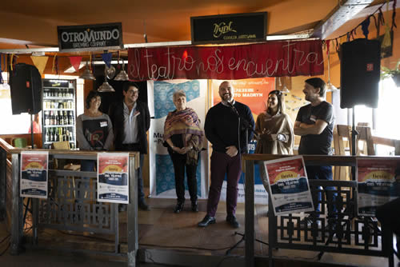

Real Chubut - Agencia de Noticias


Comenzó la Fiesta Provincial del Teatro en Puerto Madryn

Con el lema "El teatro nos encuentra", quedó inaugurada una nueva edición de este festival, que se realizará en la ciudad del golfo hasta el domingo 28 de abril.
Este miércoles se llevó a cabo en el Parador "GoGo Grill", ubicado en la Bajada 2 del Boulevard Brown de la ciudad del golfo, el acto de inauguración de la Fiesta Provincial del Teatro 2019. El evento brindará al público gran variedad de propuestas de las cuales se resaltan funciones teatrales, talleres, presentaciones, charlas y foros.
Del mismo formaron parte el secretario de Cultura del Chubut, Matías Cutro, el delegado Provincial del Instituto Nacional de Cine, Ariel Molina y en representación de la Municipalidad de Puerto Madryn, su viceintendenta, Xenia Gabella.
El secretario de Cultura, Matías Cutro, se mostró muy contento por poder llevar adelante esta fiesta en una ciudad como Puerto Madryn, ya que durante todo el año "se vive arte y se vive cultura", por lo que deseó que se pueda seguir llevando a cabo en esta ciudad por muchos años más. "Esperemos que este sea el primero y no el último", agregó.
Cutro resaltó el trabajo en conjunto entre provincia, municipio, el Instituto Nacional de Teatro y los diferentes elencos para que esta actividad pueda concretarse y remarcó "la predisposición y voluntad" de Ariel Molina "para invitarnos a realizar este trabajo juntos. Además de las funciones que vamos a vivir, es importante que se van a recuperar las instancias de encuentro, capacitación y foros".
Por su parte, Gabella, les dio la bienvenida a todos los teatreros que estaban presentes en el lugar y valoró la iniciativa de la ciudad, que "periódicamente abre los brazos para recibir a la cultura". Hizo hincapié en el lema "El Teatro nos Encuentra" y recordó que históricamente el teatro ha sido un espacio de encuentro en épocas difíciles que vivió nuestro país.
"Esta actividad nos ha permitido, a lo largo de la historia, encontrarnos a los argentinos", manifestó, al mismo tiempo que recordó que "el teatro estuvo presente cuando no podíamos hablar. Madryn es un lugar de encuentro de culturas desde su nacimiento, de encuentro permanente por personas que vienen a disfrutar de lo natural, pero no solo a eso, sino que vienen a quedarse y con quienes nos mezclamos y construimos", expresó.
Por último, el flamante delegado Provincial del Instituto Nacional del Teatro (INT), Ariel Molina, valoró esta actividad realizada en forma conjunta en estos tiempos donde los dirigentes "se aíslan" y dejan de lado este tipo de actividades, y remarcó la actitud del Secretario de Cultura, Matías Cutro, que no hizo lo mismo, sino que "nos dio una respuesta positiva de forma inmediata y comenzamos a trabajar en conjunto para que esto hoy sea realidad en Puerto Madryn".
Molina resaltó que este año, la Fiesta Provincial del Teatro no solo será una instancia selectiva para llegar con un representante de Chubut al Encuentro Nacional, sino que será aprovechada también como espacio de encuentro, de intercambio y de capacitación. En nuestro país hay una Ley Nacional de Teatro que consagra al teatro como un derecho del pueblo, y por ello se valora que este encuentro ocurra, porque dejamos en claro que el teatro está vivo y nos encuentra", finalizó Molina.
Espectáculos
Este año, la nutrida programación contará con quince espectáculos procedentes de Trevelin, Lago Puelo, Esquel, Comodoro Rivadavia, Trelew, Puerto Madryn, y una obra rionegrina como invitada especial. Las funciones podrán disfrutarse en el Teatro de La Rosada, El Galpón de La Escalera, el Teatro del Muelle, El Entusiasmo y el Cine Teatro Auditorium, en funciones para los participantes de la Fiesta y público en general.
Cada año, los teatreros del Chubut se reúnen en la Fiesta Provincial del Teatro para compartir sus producciones, participar de capacitaciones e intercambiar sus experiencias en el quehacer teatral. En esta edición, habrá devoluciones coordinadas por Hugo Aristimuño de Viedma, y foros temáticos.
Además, la Fiesta es la instancia en la que se lleva a cabo el Selectivo Provincial, que define cuál será el espectáculo que representará a la provincia en instancias nacionales. Para ello, el evento contará con la presencia de Javier Vivas de San Luis, Carlos Bima de Río Negro y Cecilia Perea de Comodoro Rivadavia, conformando el jurado que decidirá cuál será la obra chubutense que se sumará a los elegidos del resto del país en la 34º Fiesta Nacional del Teatro.
Las propuestas teatrales
En las tres jornadas que quedan de la Fiesta Provincial, el público y el jurado tendrán la oportunidad de asistir a las funciones de: "Pequeña flor" (viernes 26, 19 y 21 horas en el Teatro del Muelle) y "Con la TIERRA en los pies" de Cambia la Papa de Esquel y Trevelin (domingo 28, 16 horas en la Sala 2 del Cine Teatro Auditorium), "Estenopeica" de Bandurria Teatro de Puerto Madryn (viernes 26, 19 y 21 horas en El Entusiasmo), "El Cerrojo" de Lago Puelo (viernes 26, 20 y 22 horas en el Galpón de La Escalera), "Las cosas solo existen cuando se las representa" de Cuarto Trasero Teatro de Lago Puelo (sábado 27, 18 horas en la Sala 2 del Cine Teatro Auditorium), "¿Por qué Federico? Conferencia Perfomativa Coral" de Efectos Colaterales de Esquel (sábado 27, 19:15 y 21:30 horas en el Teatro del Muelle), "ADN Empezá a creer" de Viceversa de Comodoro Rivadavia (sábado 27, 19:15 y 21:30 horas en El Entusiasmo), "La noche devora a sus hijos" de Teatro de la cuadra y Teatro del Tablón de Esquel (sábado 27, 19:30 a 22:30 horas en El Galpón de La Escalera), y "Tablado" de Conmarca Andina de Lago Puelo (domingo 28, 17 horas en el Teatro del Muelle), además de la actuación del grupo Trampolín de San Carlos de Bariloche, Río Negro, con su espectáculo "Cardenal" (domingo 28, 20 y 22 horas en El Galpón de La Escalera), que participa de la Fiesta como invitados tras haber sido galardonados por el Instituto Nacional del Teatro por su trayectoria.
--
Subsecretaría de Información Pública del Chubut
PUBLICIDAD